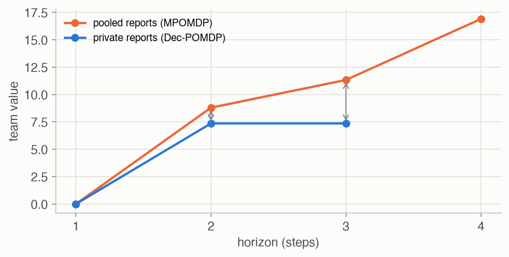
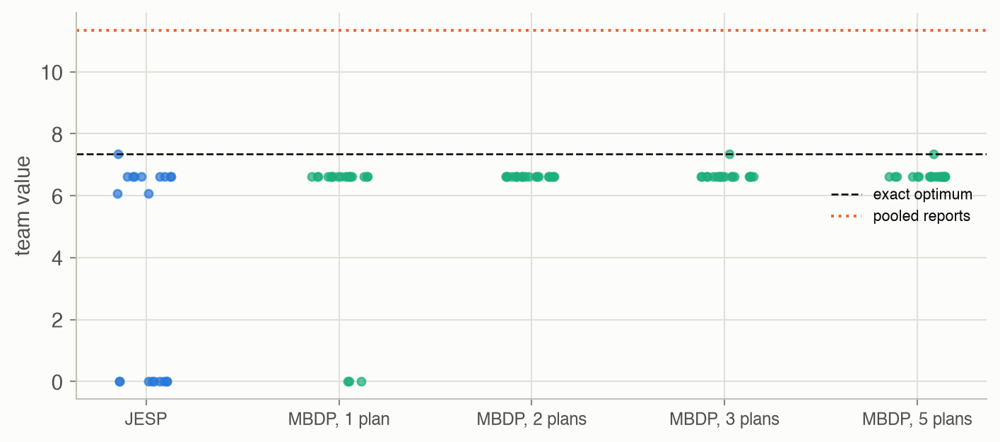

27 · Collaborative Agents
Part V — Multiagent Systems
Big picture
Where this chapter fits
Chapter 26’s agents each had their own reward, so the question was which joint policies were stable. Here all agents share one reward: a team. The model, a decentralized POMDP (Dec-POMDP), is a POMG with identical rewards. Now there is a single best joint policy, and the question is how to find it when each agent acts on its own observations. This is the last chapter of the book’s main text; it ties together plans and controllers (Chapters 20 and 23), equilibria (Chapter 24) and multiagent dynamics.
The question: how should a team act when its members can’t share what they observe?
The short answer: plan all members’ policies together, offline, knowing that each will act on its own observations; exact methods are hopeless beyond tiny problems, so use search that improves one member at a time or keeps a bounded set of plans.
- A shared reward removes the conflict of Part V’s earlier chapters, but not the coordination problem: each agent must guess what the others have seen.
- Exact planning (dynamic programming, or brute force on tiny problems) is NEXP-complete in general.
- Iterated best response (JESP) improves one agent at a time and can stop at a poor joint policy.
- Memory-bounded search (MBDP) keeps a few plans per agent, chosen at sampled beliefs.
- Controllers of fixed size can be optimized directly, if the optimizer doesn’t get stuck.
The key ideas at a glance
A Dec-POMDP has a hidden state, joint actions, private observations and one reward \(R(s, \boldsymbol{a})\) that every agent maximizes. It is a POMG whose agents all have that same reward.
Cooperation doesn’t remove the hard part. Each agent acts on its own observation history, without knowing the others’. Policies are again conditional plans or controllers. Finding the optimal joint policy is NEXP-complete (D. S. Bernstein et al., 2002), harder than POMDPs.
Structure helps. Subclasses make it easier: if the joint observations reveal the state (Dec-MDP); if the state, transitions, observations and rewards factor per agent; or if observations can be shared freely (an MPOMDP, which is just a big POMDP). Sharing observations gives an upper bound on what the team can do.
Search. Dynamic programming with pruning (Chapter 26) is exact but can prune little when rewards are shared. Iterated best response (JESP) improves one agent at a time; it converges to a joint policy no single agent can improve, which may be far from the best. Memory-bounded search (MBDP) keeps a fixed number of plans per agent, chosen at beliefs sampled by simulation.
Controllers of fixed size handle infinite horizons. They can be optimized by nonlinear programming, which can also stop at a poor local optimum.
Vocabulary
| Term | Plain meaning |
|---|---|
| Dec-POMDP | A team problem: shared reward, private observations |
| Dec-MDP | A Dec-POMDP whose agents’ observations, pooled, would reveal the state |
| MMDP / MPOMDP | Multiagent MDP / POMDP: the team shares everything, so it’s one big MDP / POMDP |
| Factored model | State split into one part per agent (plus the environment) |
| JESP | Joint equilibrium-based search for policies: iterated best response for teams |
| MBDP | Memory-bounded dynamic programming: keep a few plans per agent |
| Value of communication | How much more the team could earn by sharing observations |
After this chapter you can
- Write down a Dec-POMDP, and place a problem among its subclasses.
- Compute a team’s optimal joint plan for small problems, and an upper bound by pooling observations.
- Run iterated best response and memory-bounded search, and recognize the local optima they reach.
- Evaluate and search over joint controllers.
- Explain why a shared reward doesn’t make decentralized planning easy.
Intuition
TipAnalogy
Two rescuers at separate lookouts are looking for a lost hiker in one of two valleys. Each hears a crackly, private radio report about which valley. Carrying the hiker out takes both of them, in the same valley. They agreed on a plan before setting out, but now they can’t talk. Should a rescuer who heard “left” go left, trusting that the other heard the same? Or listen again?
We use the lost hiker, this site’s problem (problem gallery). Each rescuer can listen (cost 1; the report is right 80% of the time), search the left valley, or search the right. Both searching the right valley earns 20; one alone earns 5; each wrong search costs 10. Any search starts a new episode with a new hiker in a random valley. We also revisit Chapter 26’s caregivers, now scored by their total reward.
Coordinate on what each will hear
Over three steps, the best joint plan is worth 7.36: both listen once, then each searches the valley their own report names. Their reports agree 0.68 of the time; when they disagree, the two search different valleys. Listening a second time wouldn’t help: the benefit of better information doesn’t outweigh the cost and the delay. See Equation 1.
Talking would be worth a lot
If the rescuers could pool their reports, the team could earn 11.33 over three steps instead of 7.36: they would search only when the pooled evidence is strong, and always together. That gap, 3.97, is the value of communication. See Equation 2.
Improving one at a time gets stuck
Iterated best response starts from random plans and lets each rescuer improve given the other’s plan. In 9 of 20 runs it ended with both rescuers searching the left valley blindly every step, worth 0. A rescuer who listens instead pays 1 and learns nothing, since the other’s search keeps resetting the hiker; one who searches the other valley splits the team. Only 1 run found the optimum. See Equation 3.
Small controllers need the right memory
Over an infinite horizon, each rescuer can follow a small controller. With 3 nodes, “listen; search where told; listen again”, a pair is worth 38.74. With 2 nodes, no deterministic controller pair beats 0: a rescuer can’t remember both “go left” and “go right”. An optimizer started at random 3-node controllers found only 0.00.
Formalism
Dec-POMDPs
A Dec-POMDP (ADM §27.1; D. S. Bernstein, R. Givan, N. Immerman and S. Zilberstein, Mathematics of Operations Research, 2002) is a POMG (Chapter 26) with a single reward \(R(s, \boldsymbol{a})\) shared by all agents. A joint policy \(\boldsymbol{\pi}\) of conditional plans or controllers is scored by its common value, and the goal is the best one:
\[ \begin{aligned} \boldsymbol{\pi}^* &= \arg\max_{\boldsymbol{\pi} = (\pi^1, \dots, \pi^k)} U^{\boldsymbol{\pi}}(b), \\ U^{\boldsymbol{\pi}}(s) &= R(s, \boldsymbol{\pi}()) + \gamma \sum_{s'} T(s' \mid s, \boldsymbol{\pi}()) \sum_{\boldsymbol{o}} O(\boldsymbol{o} \mid \boldsymbol{\pi}(), s')\, U^{\boldsymbol{\pi}(\boldsymbol{o})}(s') \end{aligned} \tag{1}\]
In words. Choose every agent’s plan together to maximize the team’s expected reward, evaluating joint plans exactly as in Chapter 26.
Term by term.
- \(U^{\boldsymbol{\pi}}(b) = \sum_s b(s) U^{\boldsymbol{\pi}}(s)\), one number for the whole team.
- Each \(\pi^i\) still branches only on agent \(i\)’s own observations.
- The search space is every combination of plans: \(\prod_i |\Pi^i_h|\), doubly exponential in the horizon \(h\).
Why it holds. It’s the POMG evaluation with every \(R^i = R\); with identical rewards, the best joint policy is also a Nash equilibrium (nobody can gain by deviating from the optimum), but not every equilibrium is optimal.
Subclasses
The general problem is NEXP-complete for finite horizons (Bernstein et al.). Structure changes that (ADM §27.2):
- Dec-MDP: pooled observations would reveal the state. Still NEXP-complete: the pooling can’t happen during execution.
- Factored, with independence: each agent has its own state factor, and transitions, observations and rewards split per agent. With all three independent, each agent solves its own MDP (P-complete). With transitions and observations independent only, NP-complete. Otherwise NEXP-complete (ADM Table 27.1).
- ND-POMDP: rewards are sums over small groups of agents (a coordination graph), which scales to many agents.
- MMDP / MPOMDP: agents share all observations instantly, so the team is a single agent with joint actions: an MDP or a POMDP.
The value of communication
If the agents could share every observation, they would act as one agent with joint actions and joint observations: a POMDP over the same states (an MPOMDP). Its optimal value bounds the team’s:
\[ \begin{aligned} \max_{\boldsymbol{\pi}} U^{\boldsymbol{\pi}}(b) &\;\le\; U^*_{\text{MPOMDP}}(b), \\ U^*_{\text{MPOMDP}}(b) &= \max_{\boldsymbol{a}} \Big[ R(b, \boldsymbol{a}) + \gamma \sum_{\boldsymbol{o}} P(\boldsymbol{o} \mid b, \boldsymbol{a})\, U^*_{\text{MPOMDP}}\big(\text{Update}(b, \boldsymbol{a}, \boldsymbol{o})\big) \Big] \end{aligned} \tag{2}\]
In words. A team that shares everything can do at least as well as one that can’t.
Term by term.
- The right side is the Chapter 20 lookahead, with joint actions and joint observations; here it is computed by forward search to the horizon.
- Every decentralized policy is also a policy of the shared team (one that ignores the others’ observations), so the maximum over the larger set is at least as large.
- The difference is the value of communication: the most the team would pay for a perfect, free radio.
Why it holds. Decentralized policies are a subset of centralized ones.
Iterated best response (JESP)
Pick an agent and replace its plan with its best response to the others’ current plans, keeping the current plan in a tie (ADM §27.4; R. Nair, M. Tambe, M. Yokoo, D. Pynadath and S. Marsella, IJCAI, 2003):
\[ \pi^i \leftarrow \arg\max_{\pi^{i\prime} \in \Pi^i} U^{\pi^{i\prime}, \boldsymbol{\pi}^{-i}}(b) \tag{3}\]
In words. Holding everyone else’s plan fixed, give one agent the plan that’s best for the team.
Term by term.
- Each step searches only one agent’s plans, \(|\Pi^i|\) of them, instead of all joint plans.
- The team value never decreases, so the process stops, at a joint plan that no single agent can improve.
Why it holds. With a shared reward, an improvement for one agent is an improvement for the team. But a joint plan that no single agent can improve can still be improved by several agents changing together: the process can stop at a poor local optimum, as the blind searchers show.
Memory-bounded search (MBDP) and controllers
MBDP (ADM §27.5; S. Seuken and S. Zilberstein, IJCAI, 2007) builds plans from the last step backward, like dynamic programming, but keeps only a fixed number per agent. To choose them, it simulates random actions from \(b\) to reach a belief a few steps into the future, and keeps the best joint plan for that belief. Its memory is fixed, so it scales to long horizons, but the plans it keeps depend on which beliefs it samples.
For infinite horizons, fixed-size controllers (ADM §27.6; C. Amato, D. S. Bernstein and S. Zilberstein, 2010) are evaluated by Chapter 26’s linear solve (eq. 26.3) and optimized over all agents’ \(\psi\) and \(\eta\) together, a nonlinear program (as in Chapter 23). The page solves it with SciPy’s SLSQP from random starts.
Worked example
The best two-step plan
Both listen, then each searches the valley their own report names. Step 1 costs 2 (two listeners). The two reports are independent given the valley, each right with probability 0.8:
- both right (0.64): both search the right valley, +20;
- one right, one wrong (2 × 0.16 = 0.32): one finds the hiker alone (+5) and the other searches the wrong valley (−10): −5;
- both wrong (0.04): both search the wrong valley, −20.
So step 2 is worth \(0.64 \times 20 + 0.32 \times (-5) + 0.04 \times (-20) = 10.4\), and the plan \(-2 + 0.9 \times 10.4 = 7.36\).
Brute force over all 729 pairs of two-step plans agrees: 7.36, for L[A | B] (both rescuers), where L = listen, A = search left, B = search right, and the brackets give the next action after hearing “left” | “right”.
What pooled reports would add
With both reports shared after one round of listening, the team could search together and only when it makes sense. If the reports agree (probability 0.68), the valley they name is right with probability \(0.64/0.68 = 0.94\): searching together there is worth \(0.94 \times 20 + 0.06 \times (-20) = 17.6\). If they disagree, the valley is a coin flip, and searching blind is worth 0, no better than doing nothing useful. Two steps are then worth \(-2 + 0.9 \times 0.68 \times 17.6 = 8.8\):
The code’s forward search over shared beliefs: 8.800 for two steps, 11.334 for three (decentralized optimum 7.360).
Interactive
Two rescuers, one radio short
Pick a pair of controllers and step through a simulated search. Each rescuer’s private report is shown only to that rescuer; the team’s total reward accumulates.
Algorithms & code
Exact planning, search and controllers for teams
def shared(game):
"""A POMG with both reward rows set to the team's total reward."""
total = game.R.sum(axis=0)
return game.__class__(game.T, game.O, np.stack([total, total]), game.gamma,
game.states, game.actions, game.observations,
game.name + " (team)")
def best_joint_plan(game, b, plans, U=None):
"""The joint plan with the highest shared value from b, among
plans[0] x plans[1], by checking every pair. Returns (p1, p2, value)."""
U = pomg.plan_evaluator(game) if U is None else U
best = max(((p1, p2, pomg.utility(U, b, p1, p2)[0])
for p1, p2 in product(*plans)), key=lambda t: t[2])
return best
def exact_best_plans(game, b, horizon, U=None):
"""Brute force over every joint plan of the given horizon, for two
agents with two observations each. A plan is (a, (p_obs0, p_obs1)), so
a joint plan's value is its first reward plus four lookups in the table
W of (horizon - 1)-step joint values, one per joint observation: all
|A|^2 |P|^4 of them can be scored at once with NumPy broadcasting."""
U = pomg.plan_evaluator(game) if U is None else U
nS, nA = game.T.shape[0], game.T.shape[1]
if horizon == 1: # one step: the best joint action
v, a1, a2 = max((b @ game.R[0, :, a1, a2], a1, a2)
for a1, a2 in product(range(nA), repeat=2))
return (a1,), (a2,), float(v)
subs = pomg.all_plans(nA, 2, horizon - 1)
n = len(subs)
# W[k1, k2, s2]: shared value of subplans k1 and k2 from next state s2.
W = np.array([[[U(p, q, s)[0] for s in range(nS)] for q in subs]
for p in subs])
best = (-np.inf, None)
for a1, a2 in product(range(nA), repeat=2):
first = b @ game.R[0, :, a1, a2]
# w[s2, o1, o2]: probability of next state s2 and joint observation.
w = np.einsum("s,st,tuv->tuv", b, game.T[:, a1, a2], game.O[a1, a2])
# M[o1][o2][k1, k2] = gamma sum_s2 w W: the value of subplan pair
# (k1 after o1, k2 after o2), weighted by that observation pair.
M = game.gamma * np.einsum("tuv,ijt->uvij", w, W)
# Axes: agent 1's subplans after obs 0 and 1, agent 2's after 0, 1.
V = (first + M[0, 0][:, None, :, None] + M[0, 1][:, None, None, :]
+ M[1, 0][None, :, :, None] + M[1, 1][None, :, None, :])
k = np.unravel_index(np.argmax(V), V.shape)
if V[k] > best[0]:
p1 = (a1, (subs[k[0]], subs[k[1]]))
p2 = (a2, (subs[k[2]], subs[k[3]]))
best = (float(V[k]), (p1, p2))
return best[1][0], best[1][1], best[0]
def iterated_best_response(game, b, plans, rng, k_max=50, U=None):
"""§27.4 (JESP): start from random plans; in random agent order, switch
each agent to its best plan against the other's (ties keep the current
plan) until nobody changes. Returns the joint plan and its value."""
U = pomg.plan_evaluator(game) if U is None else U
joint = [plans[0][rng.integers(len(plans[0]))],
plans[1][rng.integers(len(plans[1]))]]
value = lambda p1, p2: pomg.utility(U, b, p1, p2)[0]
for _ in range(k_max):
changed = False
for i in rng.permutation(2):
def v(p):
return value(p, joint[1]) if i == 0 else value(joint[0], p)
best = max(plans[i], key=v)
if v(best) > v(joint[i]) + 1e-9: # ties keep the current plan
joint[i], changed = best, True
if not changed:
break
return joint[0], joint[1], value(*joint)
def explore_belief(game, b, steps, rng) -> Array:
"""Belief after `steps` random joint actions and sampled joint
observations from b (the heuristic of memory-bounded search)."""
nS, n1, n2 = game.T.shape[:3]
s = rng.choice(nS, p=b)
for _ in range(steps):
a1, a2 = rng.integers(n1), rng.integers(n2)
s2 = rng.choice(nS, p=game.T[s, a1, a2])
flat = game.O[a1, a2, s2].ravel()
o1, o2 = divmod(rng.choice(len(flat), p=flat), game.O.shape[4])
# Filter with the joint action and joint observation (Ch. 19).
b = game.O[a1, a2, :, o1, o2] * (b @ game.T[:, a1, a2, :])
b, s = b / b.sum(), s2
return b
def memory_bounded_search(game, b, horizon, max_plans, rng, U=None):
"""§27.5 (MBDP): keep at most max_plans plans per agent. At each step,
expand every kept plan by one step; then, max_plans times, sample a
belief that many steps from the end and keep the best joint plan there.
Returns the best kept joint plan from b and its value."""
U = pomg.plan_evaluator(game) if U is None else U
nA, nO = game.T.shape[1:3], game.O.shape[3:]
kept = [[(a,) for a in range(nA[i])] for i in range(2)]
for t in range(1, horizon):
grown = [pomg.expand(kept[i], nA[i], nO[i]) for i in range(2)]
kept = [[], []]
for _ in range(max_plans):
bt = explore_belief(game, b, horizon - t - 1, rng)
p1, p2, _ = best_joint_plan(game, bt, grown, U)
for i, p in enumerate((p1, p2)):
if p not in kept[i]:
kept[i].append(p)
return best_joint_plan(game, b, kept, U)
def centralized_value(game, b, horizon) -> float:
"""The team's optimal value if the agents could share observations
(an MPOMDP): forward search over beliefs, joint actions and joint
observations. An upper bound on any Dec-POMDP policy's value."""
nS, n1, n2 = game.T.shape[:3]
R = game.R[0]
def value(b, h):
best = -np.inf
for a1, a2 in product(range(n1), range(n2)):
q = b @ R[:, a1, a2]
if h > 1:
pred = b @ game.T[:, a1, a2, :] # predicted next state
for o1, o2 in product(*map(range, game.O.shape[3:])):
joint = game.O[a1, a2, :, o1, o2] * pred
p = joint.sum()
if p > 0:
q += game.gamma * p * value(joint / p, h - 1)
best = max(best, q)
return best
return value(np.asarray(b, dtype=float), horizon)
def optimize_controllers(game, b, n_nodes, rng, starts=5):
"""§27.6: the best pair of n-node stochastic controllers for the shared
reward, by SLSQP over psi and eta (values from the linear solve of
eq. 26.3, starting both controllers at node 0). Returns the value."""
nA, nO = game.T.shape[1], game.O.shape[3]
size = n_nodes * nA + n_nodes * nA * nO * n_nodes
def unpack(z):
psi = z[:n_nodes * nA].reshape(n_nodes, nA)
eta = z[n_nodes * nA:].reshape(n_nodes, nA, nO, n_nodes)
return psi, eta
def negative_value(z):
c1, c2 = unpack(z[:size]), unpack(z[size:])
return -pomg.evaluate_controllers(game, c1, c2)[0, 0, 0] @ b
# Every psi row (over actions) and eta row (over next nodes) sums to 1.
rows = [(k * nA, nA) for k in range(n_nodes)]
rows += [(n_nodes * nA + k * n_nodes, n_nodes)
for k in range(n_nodes * nA * nO)]
def row_sum(o, w): # constraint: z[o:o+w] sums to 1
return {"type": "eq", "fun": lambda z: z[o:o + w].sum() - 1}
cons = [row_sum(off + a, w) for off in (0, size) for a, w in rows]
best = -np.inf
for _ in range(starts):
z0 = np.concatenate([rng.dirichlet(np.ones(w)) for _ in range(2)
for _, w in rows])
res = minimize(negative_value, z0, method="SLSQP",
bounds=[(0, 1)] * (2 * size), constraints=cons,
options={"maxiter": 300})
best = max(best, -res.fun)
return bestusing ADM
g = lost_hiker() # POMG with identical reward rows; 1 = listen / left
b = [0.5, 0.5]
# A plan is (a,) at the last step, or (a, (plan after "left", plan after "right")).
plans(h) = h == 1 ? [(a,) for a in 1:3] :
[(a, (p, q)) for a in 1:3 for p in plans(h - 1) for q in plans(h - 1)]
# Shared value of joint plans (p1, p2) from state s (eq. 27 as in eq. 26.1).
function value(p1, p2, s)
a1, a2 = p1[1], p2[1]
u = g.R[1, s, a1, a2]
length(p1) == 1 && return u
for s′ in 1:2, o1 in 1:2, o2 in 1:2
w = g.T[s, a1, a2, s′] * g.O[a1, a2, s′, o1, o2]
w > 0 && (u += g.γ * w * value(p1[2][o1], p2[2][o2], s′)) # own branches
end
return u
end
# Brute force over all 27 × 27 two-step joint plans (in a function, so the
# loop's assignments are local: Julia's soft-scope rule).
function brute_force(h)
best, arg = -Inf, nothing
for p1 in plans(h), p2 in plans(h)
v = sum(b[s] * value(p1, p2, s) for s in 1:2)
v > best && ((best, arg) = (v, (p1, p2)))
end
return best, arg
end
best, arg = brute_force(2)
println("best two-step team value: ", round(best; digits = 3), ", plans ", arg)
@assert isapprox(best, 7.36; atol = 1e-9) && arg[1] == (1, ((2,), (3,)))
NoteReading the Python code
D.sharedturns a POMG into a team problem by giving every agent the sum of the rewards; for the lost hiker, both rows are already equal.exact_best_plansuses broadcasting:M[0, 0][:, None, :, None]has axes (agent 1’s subplan after “left”, agent 1’s after “right”, agent 2’s after “left”, agent 2’s after “right”), and adding the four such terms scores all \(27^4\) subplan combinations for one pair of first actions at once.iterated_best_responseusesmax(plans[i], key=v): the plan with the highest team value, holding the other agent’s plan fixed.centralized_valueis the Chapter 20 lookahead, written recursively over joint actions and joint observations.
Run them
game = lost_hiker()
b = np.array([0.5, 0.5])
p1, p2, v = D.exact_best_plans(game, b, 3)
print(f"exact, 3 steps: {v:.3f}; with shared reports: {D.centralized_value(game, b, 3):.3f}")
full = P.all_plans(3, 2, 3)
for seed in range(3):
print("JESP:", round(D.iterated_best_response(game, b, [full, full],
np.random.default_rng(seed))[2], 3))exact, 3 steps: 7.360; with shared reports: 11.334
JESP: 0.0
JESP: 6.624
JESP: 0.0Results
The value of communication

- With private reports, the team’s best is 7.36 at both two and three steps. Over three steps, no joint plan that listens twice does better.
- With pooled reports, it’s 8.80, 11.33 and 16.91 for two to four steps. By three steps, communication is worth 3.97, more than half the decentralized value.
- Dynamic programming with pruning (Chapter 26) kept all 27 two-step plans per rescuer: with a shared reward, nearly every plan is the best one for some guess about the other’s plan and the valley. So exact search at three steps needs the brute force above.
Approximate search at three steps

| JESP ended at | runs (of 20) | rescuer 1’s plan | rescuer 2’s plan |
|---|---|---|---|
| 0.000 | 9 | A[A[B | B] | A[B | B]] |
A[A[B | B] | A[B | B]] |
| 6.064 | 2 | L[A[B | B] | B[A | A]] |
L[A[B | B] | B[A | A]] |
| 6.624 | 8 | A[L[A | B] | L[A | B]] |
A[L[A | B] | L[A | B]] |
| 7.360 | 1 | L[A[B | B] | B[B | B]] |
L[A[B | B] | B[B | B]] |
- Iterated best response stops wherever no single rescuer can improve. The blind-searching pair (0) is such a point (see solved problem 4). It reached the optimum in 1 of 20 runs.
- Memory-bounded search mostly settles for less. With 3 kept plans, 1 of 20 runs found the optimum; the rest kept a plan worth about 6.62. Keeping more plans helped little here: with 5, 1 of 20.
Controllers and the caregivers as a team
| Controllers (each rescuer, infinite horizon) | Team value |
|---|---|
| Best identical 1-node pair (brute force) | 0.00 |
| Best identical 2-node pair (brute force) | 0.00 |
| Best identical 3-node pair (brute force): listen; search where told; listen | 38.74 |
| Best response of one rescuer to that controller, over all 3-node controllers | 38.74 |
| Nonlinear programming (SLSQP), 3 nodes, 5 random starts | 0.00 |
- Three nodes are the least that can remember “listen”, “go left” and “go right”, and the listen-then-search pair is worth 38.74. Neither rescuer can do better by switching to any other deterministic 3-node controller (38.74).
- The nonlinear program, from random starts, stopped at 0.00: the same trap as JESP’s, where neither rescuer listens because listening alone doesn’t pay.
- The caregivers of Chapter 26, scored by their total, do best with −14.75 over three steps: exactly the total of the Chapter 26 equilibrium in which caregiver 1, whose feeding is cheaper, does the feeding (−9.75 − 5). Here the selfish equilibrium happened to be the team’s best.
Solved problems
Problem 1: why isn’t a Dec-MDP just an MDP? In a Dec-MDP, the agents’ observations together reveal the state. Why can’t each agent just act on the state?
TipSolution
Because no agent has all the observations while acting. Each sees only its own part, so it must plan for what the others might have seen. The state is known “jointly” only at planning time, not during execution; that’s why Dec-MDPs remain NEXP-complete.
Problem 2: fully independent agents. A factored Dec-MDP has transition, observation and reward independence. How would you solve it?
TipSolution
Solve one MDP per agent: agent \(i\)’s own states, actions, transitions and reward component. Because nothing couples the agents (not their dynamics, their observations or their rewards), the sum of the individually optimal values is the team’s optimum, and the total cost is linear in the number of agents.
Problem 3: a two-step value by hand. In the lost hiker, suppose rescuer 1 listens then searches where told, while rescuer 2 searches the left valley both steps. What is the team’s two-step value from 50–50?
TipSolution
Step 1: rescuer 1 listens (−1); rescuer 2 searches left alone: right valley half the time (+5), else wrong (−10): −2.5. Total step 1: −3.5. Because rescuer 2 searched, the hiker resets, and the report rescuer 1 hears is uninformative, so its step-2 search is a coin flip. Step 2 (both search): same valley with probability 0.5, and then right half the time: \(0.5 \times 0.5 \times 20 + 0.5 \times 0.5 \times (-20) = 0\); different valleys (0.5): one finds the hiker (+5), one is wrong (−10): −5 × 0.5 = −2.5. Value: \(-3.5 + 0.9 \times (-2.5) = -5.75\). A mixed team is worse than either coordinated one.
Problem 4: a JESP trap. Show that “both always search left” is a point iterated best response can’t leave, even though it’s worth only 0.
TipSolution
Hold rescuer 2 at “always search left”. Every step, rescuer 2’s search resets the hiker, so rescuer 1’s reports are uninformative, and listening costs 1 for nothing. Searching right while rescuer 2 searches left splits the team: one wrong search every time (−5 per step). Searching left with rescuer 2 earns 0 on average. So rescuer 1’s best response is to keep searching left; by symmetry the same for rescuer 2. Both agents would have to switch to listening together to escape.
Problem 5: the price of silence. Using the page’s numbers, how much would the rescuers pay per three-step mission for a perfect radio, and why is it so large here?
TipSolution
Up to 3.97, the value of communication: the pooled-reports value minus the decentralized optimum. It’s large because the reward demands coordination: +20 needs both rescuers in the right valley at once. Without sharing, they must act on reports that disagree 32% of the time, splitting up; with sharing, they search only when the pooled evidence is strong, and always together.
Recap
- A Dec-POMDP is a team version of a POMG: one shared reward, private observations (Equation 1). Why it matters: it models robot teams, sensor networks and rescuers, and it is the hardest model in the book (NEXP-complete).
- Structure makes it tractable (subclasses). Why it matters: independence between agents, or free communication, can turn it into separate MDPs or one POMDP; model a problem with its structure.
- Communication has a computable value (Equation 2). Why it matters: the lost hiker’s team would gain 3.97 per three-step mission by sharing reports; that’s the case for spending on a radio.
- Improving one agent at a time finds local optima (Equation 3). Why it matters: JESP, and nonlinear programming over controllers, both stopped at “both search blindly”, a joint policy no single agent can improve. Coordinated changes require search over several agents at once.
- Bounded memory trades optimality for scale. Why it matters: MBDP and small controllers handle long horizons with fixed resources; how good they are depends on the beliefs sampled and the nodes allowed.
Cheat sheet & connections
| Name | Formula | Ref |
|---|---|---|
| Dec-POMDP objective | \(\max_{\boldsymbol{\pi}} U^{\boldsymbol{\pi}}(b)\), plans branching on own observations | Equation 1 |
| Communication bound | \(\max_{\boldsymbol{\pi}} U^{\boldsymbol{\pi}}(b) \le U^*_{\text{MPOMDP}}(b)\) | Equation 2 |
| JESP step | \(\pi^i \leftarrow \arg\max_{\pi^{i\prime}} U^{\pi^{i\prime}, \boldsymbol{\pi}^{-i}}(b)\) | Equation 3 |
| MBDP | keep \(m\) plans per agent, chosen at sampled beliefs | §27.5 |
| Controllers | maximize \(\sum_s b(s) U(\boldsymbol{x}_1, s)\) over all \(\psi^i, \eta^i\) (eq. 26.3 constraints) | §27.6 |
Common pitfalls
- Assuming cooperation makes it easy. Shared goals remove conflict, not the need to coordinate on private information.
- Letting plans use others’ observations. That’s the MPOMDP, an upper bound, not an executable decentralized policy.
- Trusting one run of a local method. JESP and nonlinear programming need many starts; compare against an exact answer or a bound when you can.
- Too little controller memory. If the best controller does nothing useful, it may not have enough nodes to represent a sensible policy.
Connections
- Ch 20 · Exact Belief State Planning: conditional plans and the lookahead used for the communication bound.
- Ch 23 · Controller Abstractions: fixed-size controllers and their optimization.
- Ch 24 · Multiagent Reasoning: best responses; the optimum of a team game is also an equilibrium.
- Ch 26 · State Uncertainty: POMGs, joint evaluation and pruning, used here with a shared reward.
- Appendix C · Computational Complexity: what NEXP-completeness means, next to the other complexity classes in the book.